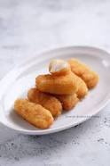

Fried Milk

Price: $10.99
Fried milk is a dessert of Cantonese cuisine, which originated in the Shunde District of Guangdong. The dish is golden and crisp on the outside, and soft and white on the inside, with a milky flavour. Milk is thickened with flour, cornstarch and eggs, and then covered with breadcrumbs and deep fried.